class: left, top, title-slide, bg_skeleton .stretch[ <h1> .lil[How Do We Understand Natural Selection?]</h1>] .id[ .right-align[ .pull-low[ <h1> .norican[University of Illinois at Chicago<br>Lucy Delaney]</h1>]]] .pull-bottom[ PhD Defense • October 2021] --- class: top, right, bg_fun -- --- class: top, right, bg_fun .chap1[ <h3>chapter one: fabaceae</h3>] .flag1[ <i class="fas fa-pennant fa-lg"></i>] --- class: top, right, bg_fun .chap1[ <h3>chapter one: fabaceae</h3>] .flag1[ <i class="fas fa-pennant fa-lg"></i>] .chap2[ <h3>chapter two: orchidaceae</h3>] .flag2[ <i class="fas fa-pennant fa-lg"></i>] --- class: top, right, bg_fun .chap1[ <h3>chapter one: fabaceae</h3>] .flag1[ <i class="fas fa-pennant fa-lg"></i>] .chap2[ <h3>chapter two: orchidaceae</h3>] .flag2[ <i class="fas fa-pennant fa-lg"></i>] .reck[ <h2>reckoning</h2>] --- class: top, right, bg_fun .opaque[ .chap1[ <h3>chapter one: fabaceae</h3>]] .flag1[ <i class="fas fa-pennant fa-lg"></i>] .opaque[ .chap2[ <h3>chapter two: orchidaceae</h3>]] .flag2[ <i class="fas fa-pennant fa-lg"></i>] .opaque[ .reck[ <h2>reckoning</h2>]] .chap3[ <h3>chapter three: fmwk analysis</h3>] .flag3[ <i class="fas fa-pennant fa-lg"></i>] --- class: top, right, bg_fun .opaque[ .chap1[ <h3>chapter one: fabaceae</h3>]] .flag1[ <i class="fas fa-pennant fa-lg"></i>] .opaque[ .chap2[ <h3>chapter two: orchidaceae</h3>]] .flag2[ <i class="fas fa-pennant fa-lg"></i>] .opaque[ .reck[ <h2>reckoning</h2>]] .chap3[ <h3>chapter three: fmwk analysis</h3>] .flag3[ <i class="fas fa-pennant fa-lg"></i>] .chap4[ <h3>chapter four: fmwk teaching</h3>] .flag4[ <i class="fas fa-pennant fa-lg"></i>] --- class: center, top, bg_fun -- <br> <br> <br> <br> <h1>everything existing in the universe is the fruit of chance and necessity</h1> .footnote-light[ Monod, 1971] --- class: center, top, bg_fun <br> <br> <br> <br> <h1> .opaque[everything existing in the universe is] the fruit of .opaque[chance and] necessity</h1> .footnote-light[ Monod, 1971] --- class: left, top, bg_horse2 -- <br> <br> <br> <blockquote> This (the contest of Love and Strife) is manifest in the mass of mortal limbs. At one time all the limbs that are the body’s portion are brought together by Love in blooming life’s high season; at another, severed by cruel Strife, they wander each alone by the breakers of life’s sea. It is the same with plants and the fish that make their homes in the waters, with the beasts that have their lairs on the hills and the seabirds that sail on wings. </blockquote> .footnote-light-right[Empedocles; Burnet, 1908] --- class: left, top, bg_horse2 -- <br> <br> <br> <blockquote> In the beginning, Earth gave birth to plants<br> After their kind, ringed with shining green<br> The hills and plains. The flowering meadows shone<br> with verdure. Then between the various trees<br> a mighty race began, all galloping<br> to be the first to shoot up into the sky </blockquote> .footnote-light-right[Lucretius, 2008] --- class: left, top, bg_horse2 -- <br> <br> <br> <blockquote> We explained there that the whole of existence in (all) its simple and composite worlds is arranged in a natural order of ascent and descent, so that everything constitutes an uninterrupted continuum. The essences at the end of each particular stage of the worlds are by nature prepared to be transformed into the essence adjacent to them, either above or below them. </blockquote> .footnote-light-right[Khaldun, 1377; Shah, 2017] --- class: middle, top, bg_fish -- .row[ .column[ Lamarck ]] .footnote-light[ Zirkle, 1941] --- class: middle, top, bg_fish .row[ .column[ Lamarck ] .column[ Leclerc ]] .footnote-light[ Zirkle, 1941] --- class: middle, top, bg_fish .row[ .column[ Lamarck ] .column[ Leclerc ] .column[ Darwin <img src="css/images/img/Erasmus-Darwin.jpg" width="85%" style="border-radius: 10%;">]] .footnote-light[ Zirkle, 1941] --- class: right, top, bg_fish .footnote-light[ Zirkle, 1941] -- <br> <br> <h2>common ancestry <i class="fad fa-sitemap"></i></h2> --- class: right, top, bg_fish <br> <br> .opaque[ <h2>common ancestry <i class="fad fa-sitemap"></i></h2>] <h2>struggle for existence <i class="fad fa-scythe"></i></h2> .footnote-light[ Zirkle, 1941] --- class: right, top, bg_fish <br> <br> .opaque[ <h2>common ancestry <i class="fad fa-sitemap"></i></h2>] .opaque[ <h2>struggle for existence <i class="fad fa-scythe"></i></h2>] .stretch[ .fishmove[ <h2>mechanistic accounts of change <i class="fad fa-cogs"></i></h2>]] .footnote-light[ Zirkle, 1941] --- class: middle, center, bg_skull -- .footnote-light[ Kampourakis, 2020; Trommler _et al._, 2018] --- class: middle, center, bg_skull <img src="css/images/img/02-house.png" width="70%"> .footnote-light[ Kampourakis, 2020; Trommler _et al._, 2018] --- class: middle, center, bg_skull .footnote-light[ Kampourakis, 2020; Trommler _et al._, 2018] --- class: middle, top, bg_fun <br> <br> <h3>one box = 100 million years</h3> .footnote-high-left[ Ballard, 1988] --- class: middle, top, bg_fun <br> <br> <h3>one box = 100 million years</h3> .footnote-high-left[ Ballard, 1988] --- class: middle, top, bg_fun <br> <br> <h3>one box = 100 million years</h3> .footnote-high-left[ Ballard, 1988] --- class: middle, top, bg_fun <br> <br> <h3>one box = 100 million years</h3> 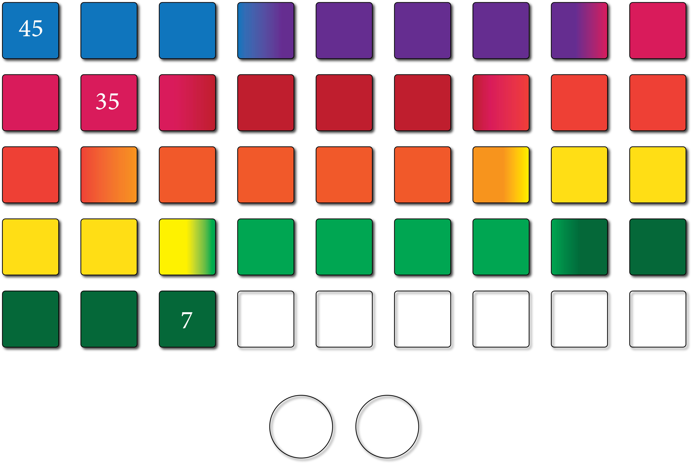 .footnote-high-left[ Ballard, 1988] --- class: middle, top, bg_fun <br> <br> <h3>one box = 100 million years</h3> .footnote-high-left[ Ballard, 1988] --- class: middle, top, bg_fun <br> <br> <h3>one box = 100 million years</h3> <img src="css/images/figs/06-timeline.png" width="100%"> .footnote-high-left[ Ballard, 1988] --- class: middle, top, bg_fun <br> <br> <h3>one box = 100 million years</h3> <img src="css/images/figs/07-timeline.png" width="100%"> .footnote-high-left[ Ballard, 1988] --- class: left, middle, bg_skull .stretch[ <h1> .midi[<i class="fad fa-ghost"></i>] primed to see evidence of design</i></h1>] --- class: left, middle, bg_skull .stretch[ .opaque[ <h1> .midi[<i class="fad fa-ghost"></i>] primed to see evidence of design</i></h1>] <h1> .midi[<i class="fad fa-ghost"></i>] struggle with large timescales</h1>] --- class: top, center, bg_owls <br> <br> <i class="fad fa-dna fa-2x"></i> <i class="fad fa-skull-crossbones fa-2x"></i> <i class="fad fa-users-class fa-2x"></i> .opacity[ <h1>individuals vary in heritable characteristics</h1>] --- class: top, center, bg_owls <br> <br> <i class="fad fa-dna fa-3x"></i> <i class="fad fa-skull-crossbones fa-2x"></i> <i class="fad fa-users-class fa-2x"></i> <h1>individuals vary in heritable characteristics</h1> --- class: top, center, bg_owls <br> <br> <i class="fad fa-dna fa-2x"></i> <i class="fad fa-skull-crossbones fa-3x"></i> <i class="fad fa-users-class fa-2x"></i> <h1>there is a struggle for existence</h1> --- class: top, center, bg_owls <br> <br> <i class="fad fa-dna fa-2x"></i> <i class="fad fa-skull-crossbones fa-2x"></i> <i class="fad fa-users-class fa-3x"></i> .left-align[ <h1> .norican[Those with characteristics that…]<br><br> .opacity[ <i class="fas fa-sort-amount-up"></i> survival and reproduction<br><i class="fas fa-sort-amount-up"></i> in population</h1>]] --- class: top, center, bg_owls <br> <br> <i class="fad fa-dna fa-2x"></i> <i class="fad fa-skull-crossbones fa-2x"></i> <i class="fad fa-users-class fa-3x"></i> .left-align[ <h1> .norican[Those with characteristics that…]<br><br> <i class="fas fa-sort-amount-up"></i> survival and reproduction<br> .opacity[ <i class="fas fa-sort-amount-up"></i> in population</h1>]] --- class: top, center, bg_owls <br> <br> <i class="fad fa-dna fa-2x"></i> <i class="fad fa-skull-crossbones fa-2x"></i> <i class="fad fa-users-class fa-3x"></i> .left-align[ <h1> .norican[Those with characteristics that…]<br><br> <i class="fas fa-sort-amount-up"></i> survival and reproduction<br> <i class="fas fa-sort-amount-up"></i> in population</h1>] --- class: top, center, bg_fun <br> <br> 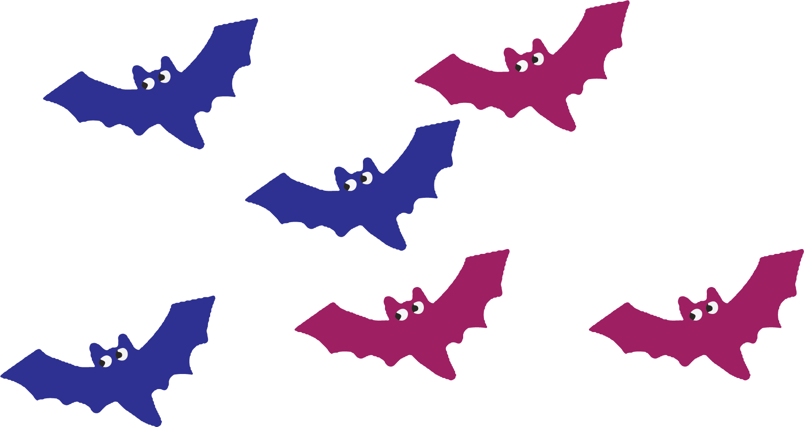 --- class: top, center, bg_fun <br> <br> --- class: top, center, bg_fun <br> <br> 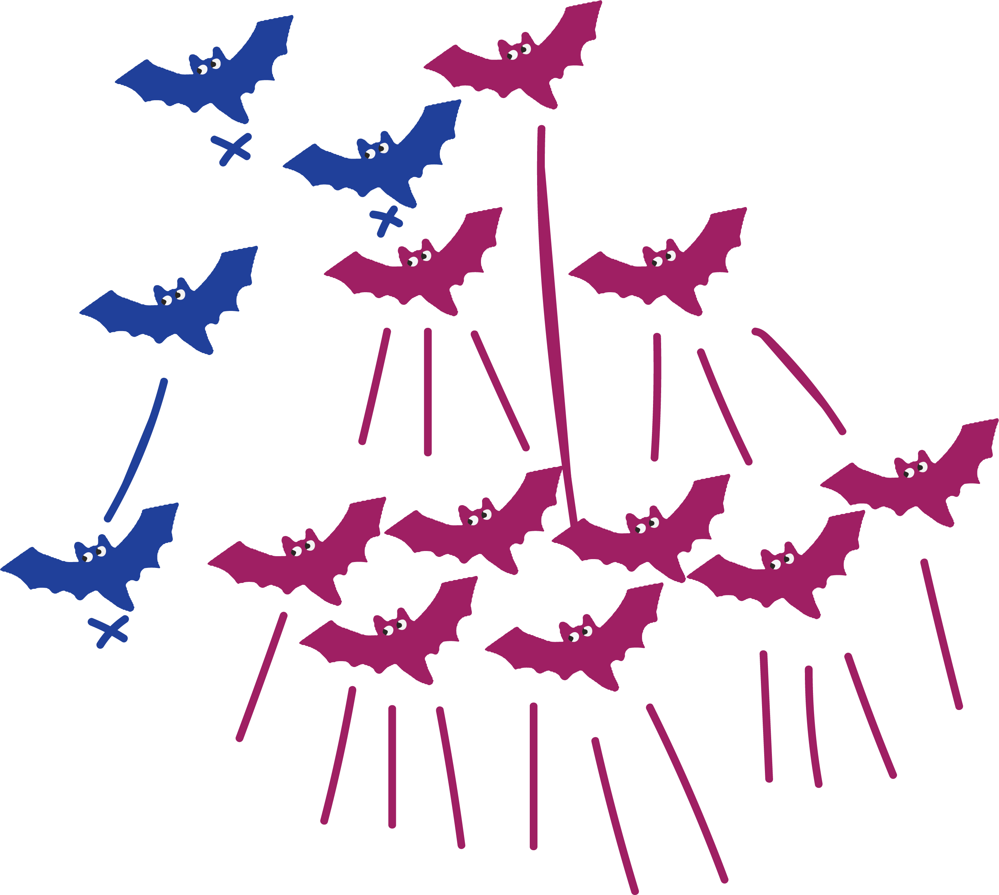 --- class: top, center, bg_owls <i class="fad fa-dna fa-3x"></i> <i class="fad fa-skull-crossbones fa-2x"></i> <i class="fad fa-users-class fa-2x"></i> <h1>individuals vary in heritable characteristics</h1> --- class: top, center, bg_owls <i class="fad fa-dna fa-3x"></i> <i class="fad fa-skull-crossbones fa-2x"></i> <i class="fad fa-users-class fa-2x"></i> .opaque[ <h1>individuals vary in heritable characteristics</h1>] <h1><i class="fad fa-times-circle"></i><br> .norican[Essentialism]</h1> --- class: top, center, bg_owls <i class="fad fa-dna fa-2x"></i> <i class="fad fa-skull-crossbones fa-3x"></i> <i class="fad fa-users-class fa-2x"></i> <h1>there is a struggle for existence</h1> --- class: top, center, bg_owls <i class="fad fa-dna fa-2x"></i> <i class="fad fa-skull-crossbones fa-3x"></i> <i class="fad fa-users-class fa-2x"></i> .opaque[ <h1>there is a struggle for existence</h1>] <h1><i class="fad fa-times-circle"></i><br> .norican[Nature is harmonious and divine]</h1> --- class: top, center, bg_owls <i class="fad fa-dna fa-2x"></i> <i class="fad fa-skull-crossbones fa-2x"></i> <i class="fad fa-users-class fa-3x"></i> .left-align[ <h1> .norican[Those with characteristics that…]<br><br> <i class="fas fa-sort-amount-up"></i> survival and reproduction<br><i class="fas fa-sort-amount-up"></i> in population</h1>] --- class: top, center, bg_owls <i class="fad fa-dna fa-2x"></i> <i class="fad fa-skull-crossbones fa-2x"></i> <i class="fad fa-users-class fa-3x"></i> .left-align[ <h1> .norican[Those with characteristics that…]<br><br> <i class="fas fa-sort-amount-up"></i> .red[survival] and reproduction<br><i class="fas fa-sort-amount-up"></i> in population</h1>] --- class: top, center, bg_owls <i class="fad fa-dna fa-2x"></i> <i class="fad fa-skull-crossbones fa-2x"></i> <i class="fad fa-users-class fa-3x"></i> .left-align[ <h1> .norican[Those with characteristics that…]<br><br> <i class="fas fa-sort-amount-up"></i> survival and .red[reproduction]<br><i class="fas fa-sort-amount-up"></i> in population</h1>] --- class: middle, center, bg_fun -- --- class: middle, center, bg_fun --- class: top, center, bg_fun <br> <br> --- class: top, center, bg_fun <br> <br> --- class: center, middle, bg_devil <h3>natural selection can only tinker, not create</h3> .footnote-light-right[ Jacob, 1977] --- class: middle, center, bg_fun 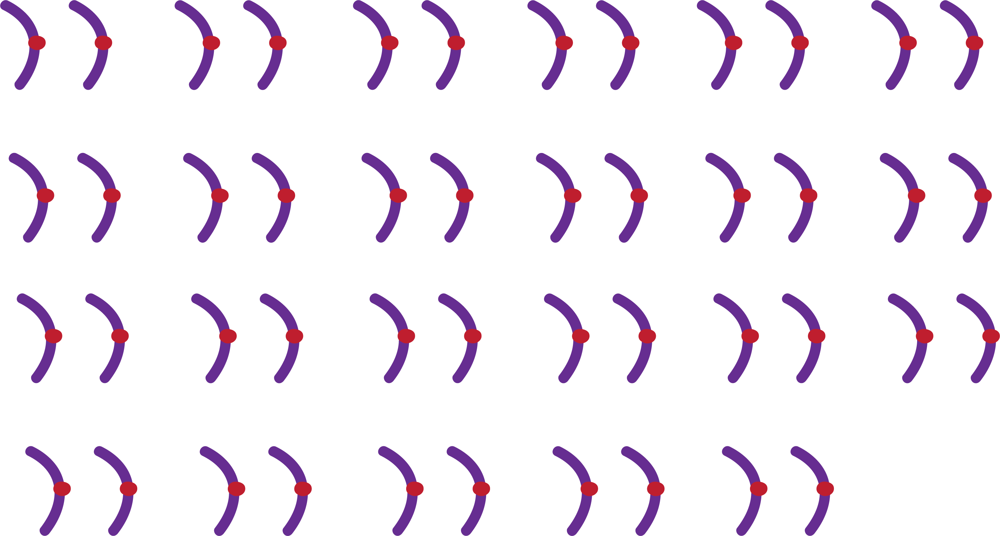 --- class: middle, center, bg_fun --- class: middle, center, bg_fun 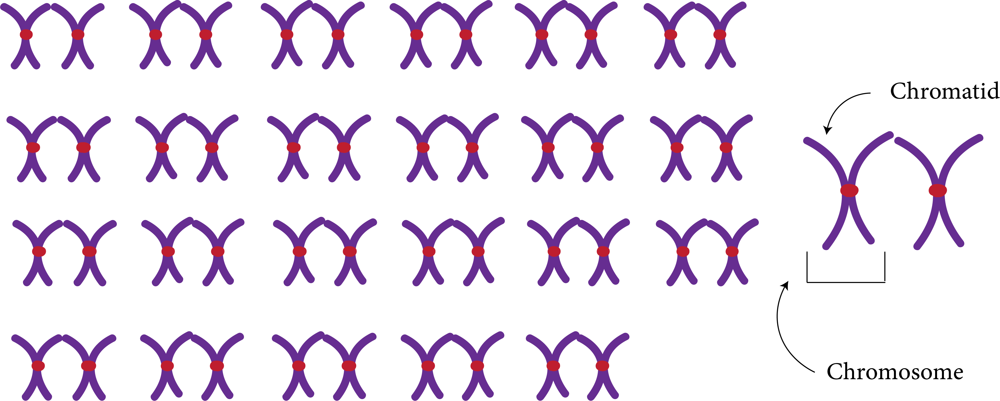 --- class: middle, center, bg_fun --- class: middle, center, bg_fun --- class: middle, center, bg_fun --- class: middle, center, bg_fun --- class: middle, center, bg_fun 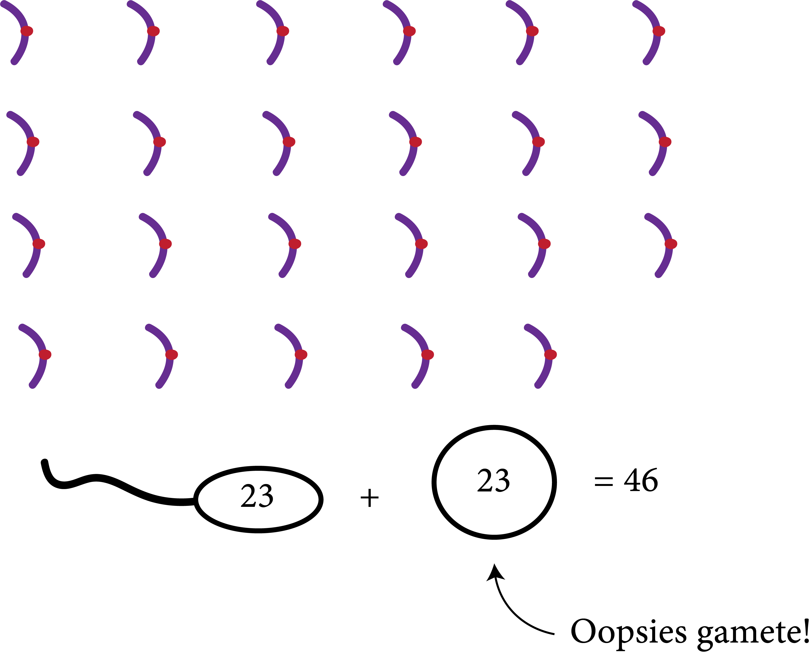 --- class: top, center, bg_devil <i class="fad fa-balance-scale-left fa-3x"></i> <i class="fad fa-balance-scale fa-3x"></i> <i class="fad fa-balance-scale-right fa-3x"></i> --- class: top, center, bg_devil <i class="fad fa-balance-scale-left fa-5x"></i> <i class="fad fa-balance-scale fa-3x"></i> <i class="fad fa-balance-scale-right fa-3x"></i> <h3>bad mutations</h3> --- class: top, center, bg_devil <i class="fad fa-balance-scale-left fa-3x"></i> <i class="fad fa-balance-scale fa-5x"></i> <i class="fad fa-balance-scale-right fa-3x"></i> <h3>neutral mutations</h3> --- class: top, center, bg_devil <i class="fad fa-balance-scale-left fa-3x"></i> <i class="fad fa-balance-scale fa-3x"></i> <i class="fad fa-balance-scale-right fa-5x"></i> <h3>beneficial mutations</h3> --- class: top, center, bg_devil <i class="fad fa-balance-scale-left fa-3x"></i> <i class="fad fa-balance-scale fa-3x"></i> <i class="fad fa-balance-scale-right fa-5x"></i> <h3>beneficial mutations</h3> <h1>now natural selection can act</h1> --- class: middle, center, bg_fun -- --- class: middle, center, bg_fun --- class: middle, center, bg_fun 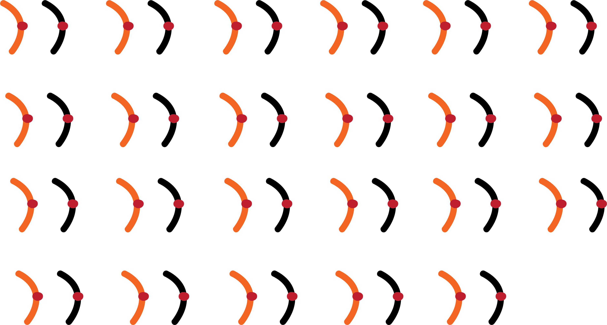 --- class: middle, left, bg_fun .gamete1[ <h3>one gamete</h3>] .gamete2[ <h3>two gamete</h3>] .moveimg[ 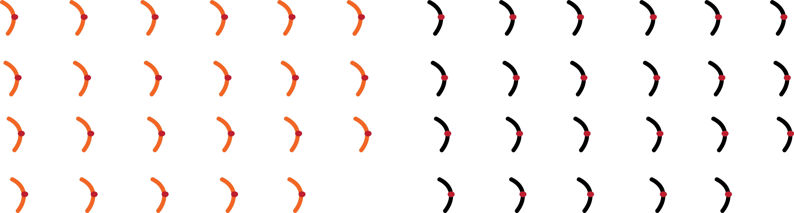] --- class: middle, center, bg_fun --- class: middle, center, bg_fun 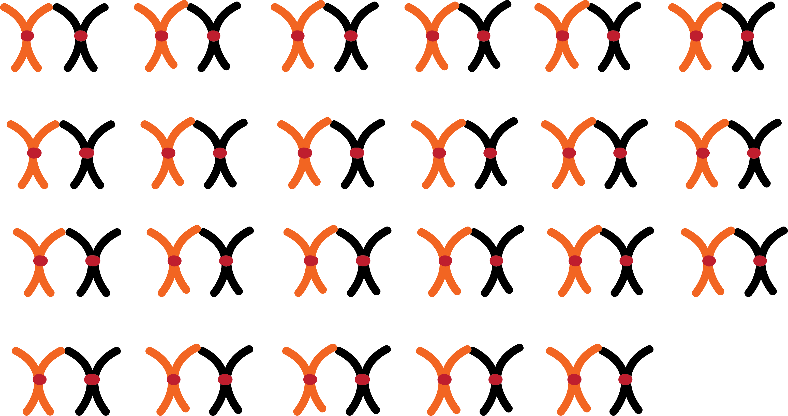 --- class: middle, center, bg_fun --- class: middle, left, bg_fun .gamete1[ <h3>one gamete</h3>] .gamete2[ <h3>two gamete</h3>] .moveimg[ ] --- class: middle, left, bg_fun .gamete1[ <h3>one gamete</h3>] .gamete2[ <h3>two gamete</h3>] .moveimg[ ] --- class: middle, left, bg_fun .gamete1[ <h3>one gamete</h3>] .gamete2[ <h3>two gamete</h3>] .moveimg[ ] --- class: top, left, bg_creepysnake -- <ul class="fa-ul"> <li><h2> .midi[ .fa-li[<i class="fad fa-knife-kitchen"></i>]]individual organisms vary</h2></li> </ul> --- class: top, left, bg_creepysnake <ul class="fa-ul"> <li><h2> .midi[ .fa-li[<i class="fad fa-knife-kitchen"></i>]] .opaque[individual organisms vary]</h2></li> <li><h2> .midi[ .fa-li[<i class="fad fa-knife-kitchen"></i>]]random processes generate variation </h2></li> </ul> --- class: top, left, bg_creepysnake <ul class="fa-ul"> <li><h2> .midi[ .fa-li[<i class="fad fa-knife-kitchen"></i>]] .opaque[individual organisms vary]</h2></li> <li><h2> .midi[ .fa-li[<i class="fad fa-knife-kitchen"></i>]] .opaque[random processes generate variation] </h2></li> <li><h2> .midi[ .fa-li[<i class="fad fa-knife-kitchen"></i>]]species-level patterns emerge over generations </h2></li> </ul> --- class: middle, center, bg_blood -- <h2>traits that influence mating are important</h2> .footnote-light[ Charlesworth, 2006] --- class: middle, center, bg_blood <h2>traits that influence mating are important</h2> <br> <br> <i class="fad fa-venus-mars fa-3x"></i> <i class="far fa-rings-wedding fa-3x"></i> <i class="fad fa-flower-tulip fa-3x"></i> --- class: middle, center, bg_blood <h2>traits that influence mating are important</h2> <br> <br> <i class="fad fa-venus-mars fa-5x"></i> <i class="far fa-rings-wedding fa-3x"></i> <i class="fad fa-flower-tulip fa-3x"></i> --- class: middle, center, bg_blood <h2>traits that influence mating are important</h2> <br> <br> <i class="fad fa-venus-mars fa-3x"></i> <i class="far fa-rings-wedding fa-5x"></i> <i class="fad fa-flower-tulip fa-3x"></i> --- class: middle, center, bg_blood <h2>traits that influence mating are important</h2> <br> <br> <i class="fad fa-venus-mars fa-3x"></i> <i class="far fa-rings-wedding fa-3x"></i> <i class="fad fa-flower-tulip fa-5x"></i> --- class: middle, center, bg_blood .opacity[ .left-align[ .anther[ <h3>stamen <i class="fal fa-arrow-right"></i></h3>]]] <img src="css/images/figs/61-plant-sex.png" width="30%"> .opacity[ .right-align[ .pistil[ <h3><i class="fal fa-arrow-left"></i> pistil</h3>]]] .footnote-high-left[ Silva & Goring, 2001] --- class: middle, center, bg_blood .left-align[ .anther[ <h3>stamen <i class="fal fa-arrow-right"></i></h3>]] <img src="css/images/figs/61-plant-sex.png" width="30%"> .opacity[ .right-align[ .pistil[ <h3><i class="fal fa-arrow-left"></i> pistil</h3>]]] .footnote-high-left[ Silva & Goring, 2001] --- class: middle, center, bg_blood .left-align[ .anther[ <h3>stamen <i class="fal fa-arrow-right"></i></h3>]] <img src="css/images/figs/61-plant-sex.png" width="30%"> .right-align[ .pistil[ <h3><i class="fal fa-arrow-left"></i> pistil</h3>]] .footnote-high-left[ Silva & Goring, 2001] --- class: middle, center, bg_blood <img src="css/images/figs/61-plant-sex.png" width="30%"> <img src="css/images/figs/62-plant-sex.png" width="30%"> .opacity[<img src="css/images/figs/63-plant-sex.png" width="30%">] .footnote-high-left[ Silva & Goring, 2001] --- class: middle, center, bg_blood <img src="css/images/figs/61-plant-sex.png" width="30%"> <img src="css/images/figs/62-plant-sex.png" width="30%"> <img src="css/images/figs/63-plant-sex.png" width="30%"> .footnote-high-left[ Silva & Goring, 2001] --- class: middle, center, bg_fun -- <br> <br> .moveimg[ <img src="css/images/figs/trees/11-mechanism.png" width="130%">] .footnote-high-right[ Chase _et al._, 2016] --- class: middle, center, bg_fun <br> <br> .moveimg[ <img src="css/images/figs/trees/12-mechanism.png" width="130%">] .footnote-high-right[ Chase _et al._, 2016; Allen and Hiscock, 2008] --- class: middle, center, bg_fun <br> <br> .moveimg[ ] .footnote-high-right[ Chase _et al._, 2016; Steinbachs & Holsinger, 2002; Igić & Kohn, 2001; Ramanauskas & Igić, 2020] --- class: middle, center, bg_fun <br> <br> .moveimg[ <img src="css/images/figs/trees/14-mechanism.png" width="130%">] .footnote-high-right[ Chase _et al._, 2016; Steinbachs & Holsinger, 2002; Igić & Kohn, 2001; Ramanauskas & Igić, 2020] --- class: middle, center, bg_fun <br> <br> .moveimg[ <img src="css/images/figs/trees/15-mechanism.png" width="130%">] .footnote-high-right[ Chase _et al._, 2016; Steinbachs & Holsinger, 2002; Igić & Kohn, 2001; Ramanauskas & Igić, 2020] --- class: top, center, bg_horse -- <h3><i class="fad fa-check-double"></i> no pollinators</h3> --- class: top, center, bg_horse <h3><i class="fad fa-check-double"></i> no pollinators</h3> <h3><i class="fad fa-check-double"></i> no mates</h3> --- class: top, center, bg_horse <h3><i class="fad fa-check-double"></i> no pollinators</h3> <h3><i class="fad fa-check-double"></i> no mates</h3> <h1>why is SI maintained?</h1> .footnote-light-right[ Igić & Busch, 2013] --- class: top, center, bg_horse <br> <br> <br> <h1 style="font-family: Norican;"> .large[We need good data!]</h1> --- class: top, center, bg_horse <br> <br> <i class="fad fa-check-square fa-3x"></i> <i class="fad fa-times-square fa-3x"></i> --- class: top, center, bg_horse <br> <br> <i class="fad fa-check-square fa-5x"></i> <i class="fad fa-times-square fa-3x"></i> <h2>plants that are SI</h2> --- class: top, center, bg_horse <br> <br> <i class="fad fa-check-square fa-3x"></i> <i class="fad fa-times-square fa-5x"></i> <h2>plants that are not SI</h2> --- class: top, center, bg_horse -- .footnote-light-right[ Goldberg _et al._, 2010] --- class: top, center, bg_horse .footnote-light-right[ Goldberg _et al._, 2010] --- class: top, center, bg_horse .footnote-light-right[ Goldberg _et al._, 2010] --- class: top, center, bg_horse <i class="fad fa-check-square fa-5x"></i> <i class="fad fa-times-square fa-3x"></i> <i class="fad fa-sitemap fa-3x"></i> <h2>plants that are SI</h2> --- class: top, center, bg_horse <i class="fad fa-check-square fa-3x"></i> <i class="fad fa-times-square fa-5x"></i> <i class="fad fa-sitemap fa-3x"></i> <h2>plants that are not SI</h2> --- class: top, center, bg_horse <i class="fad fa-check-square fa-3x"></i> <i class="fad fa-times-square fa-3x"></i> <i class="fad fa-sitemap fa-5x"></i> <h2>evolutionary relationships</h2> --- class: middle, center, bg_fun .footnote-high-left[ Delaney & Igić, 2022 (_in press_)] --- class: top, center, bg_squid -- <br> <br> <h1>everything existing in the universe is the fruit of chance and necessity</h1> --- class: top, center, bg_squid <br> <br> <h1> .opaque[everything existing in the universe is] the fruit of chance .opaque[and necessity] </h1> --- class: middle, left, bg_squid ```r coin.flip <– function(n){ flips <– sample(c("Heads", "Tails"), n = n, replace = TRUE, prob = c(0.5, 0.5)) table(flips) %>% return() } ``` --- class: middle, left, bg_squid ``` r coin.flip(n = 10) ``` -- ``` ## flips ## Heads Tails ## 2 8 ``` -- ```r coin.flip(n = 100) ``` ``` ## flips ## Heads Tails ## 57 44 ``` --- class: middle, left, bg_squid ```r coin.flip(n = 10000) ``` -- ``` ## flips ## Heads Tails ## 4936 5064 ``` -- ```r coin.flip(n = 1000000) ``` -- ``` ## flips ## Heads Tails ## 499726 500274 ``` --- class: top, center, bg_squid -- <br> .left-align[ .opacity[ .locus[ <h3>locus</h3>]]] <img src="css/images/figs/71-locus.png" width="35%"> --- class: top, center, bg_squid <br> .left-align[ .locus[ <h3>locus</h3>]] --- class: top, center, bg_squid <br> <br> <h1>everything existing in the universe is the fruit of chance and necessity</h1> --- class: top, right, bg_moonowl -- .moonquote[ <blockquote> Science is built up of facts, as a house is built of stones; but an accumulation of facts is no more a science than a heap of stones is a house. </blockquote>] .opacity[ .moontext[ <h1> .norican[Facts without context are meaningless!]</h1>]] .footnote-light-right[ Poincaré, 1905] --- class: top, right, bg_moonowl .moonquote[ <blockquote> Science is built up of facts, as a house is built of stones; but an accumulation of facts is no more a science than a heap of stones is a house. </blockquote>] .moontext[ <h1> .norican[Facts without context are meaningless!]</h1>] .footnote-light-right[ Poincaré, 1905; Heath & Heath, 2007] --- class: top, center, bg_snake -- <br> <br> <i class="fad fa-list-ol fa-3x"></i> <i class="fad fa-bone-break fa-3x"></i> <i class="fad fa-head-side-brain fa-3x"></i> .footnote-light-right[ Delaney & Brown, _in prep_] --- class: top, center, bg_snake <br> <br> <i class="fad fa-list-ol fa-5x"></i> <i class="fad fa-bone-break fa-3x"></i> <i class="fad fa-head-side-brain fa-3x"></i> <h2>no linear sequence</h2> .footnote-light-right[ Delaney & Brown, _in prep_] --- class: top, center, bg_snake <br> <br> <i class="fad fa-list-ol fa-3x"></i> <i class="fad fa-bone-break fa-5x"></i> <i class="fad fa-head-side-brain fa-3x"></i> <h2>fractured discipline</h2> .footnote-light-right[ Delaney & Brown, _in prep_] --- class: top, center, bg_snake <br> <br> <i class="fad fa-list-ol fa-3x"></i> <i class="fad fa-bone-break fa-3x"></i> <i class="fad fa-head-side-brain fa-5x"></i> <h2>features of brains</h2> .footnote-light-right[ Delaney & Brown, _in prep_] --- class: middle, right, bg_snake -- <h3>system I: fast, intuitive, high capacity <i class="fad fa-tachometer-alt-fastest"></i></h3> .footnote-light-right[ Trommler _et al._, 2018] --- class: middle, right, bg_snake <h3>system I: fast, intuitive, high capacity <i class="fad fa-tachometer-alt-fastest"></i></h3> <h3>system II: slow, reflective, low capacity <i class="fad fa-tachometer-alt-slow"></i></h3> .footnote-light-right[ Trommler _et al._, 2018] --- class: top, right, bg_witch -- <br> .stretch[ .snakemove[ <h1>complex overlapping processes .midi[<i class="fad fa-hockey-mask"></i>]</h1>]] --- class: top, right, bg_witch <br> .stretch[ .snakemove[ .opaque[ <h1>complex overlapping processes .midi[<i class="fad fa-hockey-mask"></i>]</h1>]]] <h1>integrating knowledge .midi[<i class="fad fa-hockey-mask"></i>]</h1> --- class: top, right, bg_witch <br> .stretch[ .snakemove[ .opaque[ <h1>complex overlapping processes .midi[<i class="fad fa-hockey-mask"></i>]</h1>]]] .opaque[ <h1>integrating knowledge .midi[<i class="fad fa-hockey-mask"></i>]</h1>] <h1>counter-intuitive .midi[<i class="fad fa-hockey-mask"></i>]</h1> --- class: top, right, bg_heads <h2>what is an explanation?</h2> .footnote-light[ Salmon, 2006] --- class: top, right, bg_heads <h2>what is an explanation?</h2> .footnote-light[ Salmon, 2006] <h3>relevant and compelling evidence <i class="fad fa-check-double"></i></h3> --- class: top, right, bg_heads <h2>what is an explanation?</h2> <h3>relevant and compelling evidence <i class="fad fa-check-double"></i></h3> <h3>justification that demonstrates causality <i class="fad fa-check-double"></i></h3> .footnote-light[ Salmon, 2006] --- class: middle, center, bg_heads <blockquote class="twitter-tweet" data-dnt="true"><p lang="en" dir="ltr">What's the dumbest beliefs you had as a child?<br><br>When I was 4-5 I swore that bird seeds grew birds, thus the name. When my parents asked me to prove it to them, I planted a pile of bird seeds.<br><br>The next day there were loads of birds where I planted the seeds, showing I was right.</p>— _grimm (@ExileGrimm) <a href="https://twitter.com/ExileGrimm/status/1412448161688215553?ref_src=twsrc%5Etfw">July 6, 2021</a></blockquote> <script async src="https://platform.twitter.com/widgets.js" charset="utf-8"></script> --- class: middle, left, bg_heads --- class: top, center, bg_pumpkin <h3>explanation in biological sciences:</h3> -- <br> .footnote-light-right[ Potochnik, 2020; Braillard & Malaterre, 2015; Potochnik, 2013] --- class: top, center, bg_pumpkin .footnote-light-right[ Potochnik, 2020; Braillard & Malaterre, 2015; Potochnik, 2013; Kampourakis & Zogza, 2008] -- .pull-left[ <h1>adaptation<br>as a state</h1>] --- class: top, center, bg_pumpkin .pull-left[ <h1>adaptation<br>as a state</h1>] .pull-right[ <h1>adaptation<br>as a process</h1>] .footnote-light-right[ Potochnik, 2020; Braillard & Malaterre, 2015; Potochnik, 2013; Kampourakis & Zogza, 2008] --- class: top, center, bg_pumpkin .pull-left[ <img src="css/images/figs/81-polymorph.png" width="85%">] --- class: top, center, bg_pumpkin .pull-left[ <img src="css/images/figs/81-polymorph.png" width="85%">] .pull-right-wide[ .right-align[ What genes are responsible for ghost color?]] --- class: top, center, bg_pumpkin .pull-left[ <img src="css/images/figs/81-polymorph.png" width="85%">] .pull-right-wide[ .right-align[ What genes are responsible for ghost color?<br> Are the genes homologous?]] --- class: top, center, bg_pumpkin .pull-left[ <img src="css/images/figs/81-polymorph.png" width="85%">] .pull-right-wide[ .right-align[ What genes are responsible for ghost color?<br> Are the genes homologous?<br> How common are mutations in these genes?]] --- class: top, center, bg_pumpkin .pull-left[ <img src="css/images/figs/81-polymorph.png" width="85%">] .pull-right-wide[ .right-align[ What genes are responsible for ghost color?<br> Are the genes homologous?<br> How common are mutations in these genes?<br> What is the biochemical pathway?]] --- class: top, center, bg_pumpkin .pull-left[ <img src="css/images/figs/81-polymorph.png" width="85%">] .pull-right-wide[ .right-align[ What genes are responsible for ghost color?<br> Are the genes homologous?<br> How common are mutations in these genes?<br> What is the biochemical pathway?<br> How does a mutation alter this pathway?]] --- class: top, center, bg_pumpkin .pull-left[ <img src="css/images/figs/81-polymorph.png" width="85%">] .pull-right-wide[ .right-align[ What genes are responsible for ghost color?<br> Are the genes homologous?<br> How common are mutations in these genes?<br> What is the biochemical pathway?<br> How does a mutation alter this pathway?<br> Ghost color change lead to shifts in mating?]] --- class: top, center, bg_pumpkin .pull-left[ <img src="css/images/figs/81-polymorph.png" width="85%">] .pull-right-wide[ .right-align[ What genes are responsible for ghost color?<br> Are the genes homologous?<br> How common are mutations in these genes?<br> What is the biochemical pathway?<br> How does a mutation alter this pathway?<br> Ghost color change lead to shifts in mating?<br> Do shifts in mating lead to reproductive isolation?]] --- class: middle, right, bg_tiger -- .pattern[ .opacity[ <h3>pattern process</h3>]] .footnote-sortahigh-left[ Delaney & Brown, _in prep_] --- class: middle, right, bg_tiger .pattern[ <h3>pattern <span style="opacity: 0;">process</span></h3>] .footnote-sortahigh-left[ Delaney & Brown, _in prep_] --- class: middle, right, bg_tiger .pattern[ <h3>pattern process</h3>] .footnote-sortahigh-left[ Delaney & Brown, _in prep_] --- class: middle, right, bg_tiger .pattern[ <h3>pattern process</h3>] .proximate[ .right-align[ <h3>proximate<br><br><br><br><br> ultimate</h3>]] .footnote-sortahigh-left[ Delaney & Brown, _in prep_] --- class: middle, right, bg_tiger .pattern[ <h3>pattern process</h3>] .proximate[ .right-align[ <h3>proximate<br><br><br><br><br> ultimate</h3>]] .footnote-sortahigh-left[ Delaney & Brown, _in prep_] --- class: middle, right, bg_tiger .pattern[ <h3>pattern process</h3>] .proximate[ .right-align[ <h3>proximate<br><br><br><br><br> ultimate</h3>]] .footnote-sortahigh-left[ Delaney & Brown, _in prep_] --- class: middle, right, bg_tiger .pattern[ <h3>pattern process</h3>] .proximate[ .right-align[ <h3>proximate<br><br><br><br><br> ultimate</h3>]] .footnote-sortahigh-left[ Delaney & Brown, _in prep_] --- class: middle, right, bg_tiger .pattern[ <h3>pattern process</h3>] 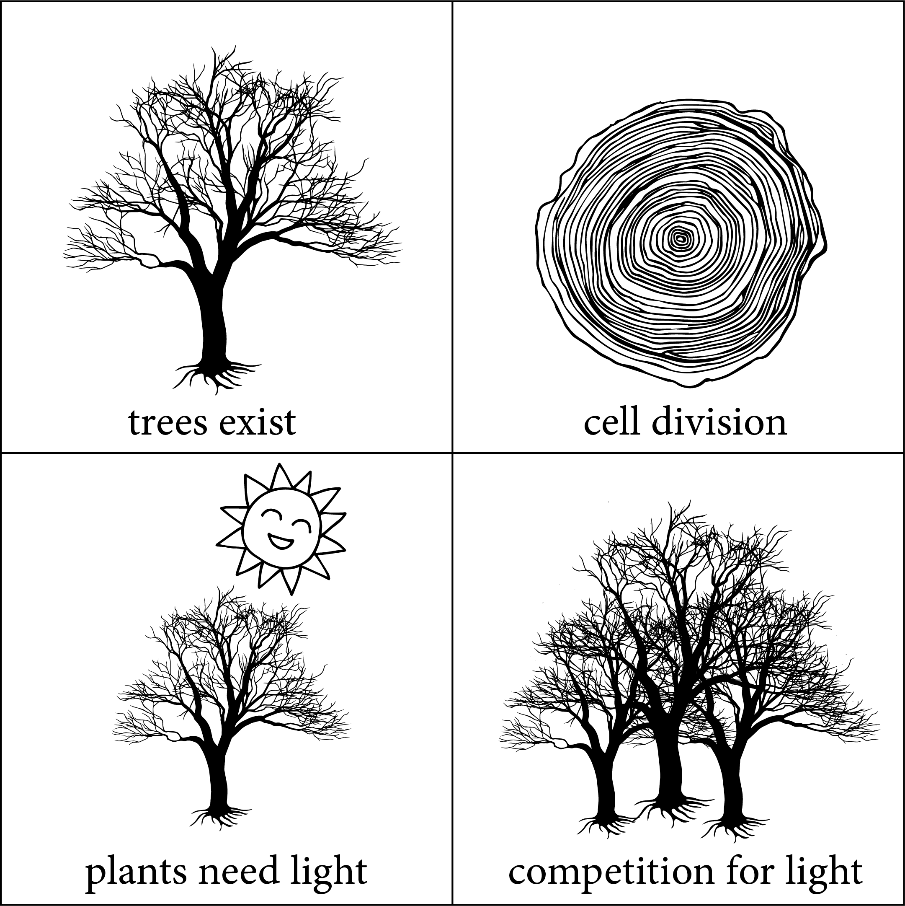 .proximate[ .right-align[ <h3>proximate<br><br><br><br><br> ultimate</h3>]] .footnote-sortahigh-left[ Delaney & Brown, _in prep_] --- class: middle, center, bg_bat -- .moveimg2[ <br> <br> ] .footnote-high-left[ Delaney & Brown, _in prep_] --- class: middle, center, bg_bat .moveimg2[ <br> <br> 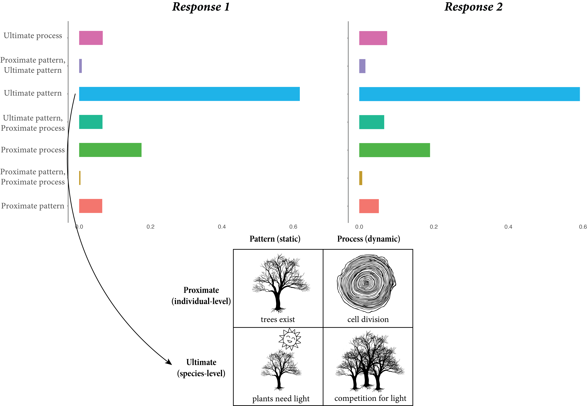] .footnote-high-left[ Delaney & Brown, _in prep_] --- class: middle, right, bg_creep -- .creeptext[ <h3>true learning kinda sucks! <i class="fad fa-jack-o-lantern"></i></h3>] --- class: middle, right, bg_creep .creeptext[ <h3>true learning kinda sucks! <i class="fad fa-jack-o-lantern"></i></h3> <h3>unique challenges in biology <i class="fad fa-jack-o-lantern"></i></h3>] --- class: middle, right, bg_creep .creeptext[ <h3>true learning kinda sucks! <i class="fad fa-jack-o-lantern"></i></h3> <h3>unique challenges in biology <i class="fad fa-jack-o-lantern"></i></h3> <h3>need a better narrative <i class="fad fa-jack-o-lantern"></i></h3>] --- class: middle, right, bg_squid2 -- .squidtext[ <h2>everything existing in the universe is the fruit of chance and necessity</h2>] --- class: middle, right, bg_squid2 .thanks[ .bitlargest[ <h1><i class="fab fa-github"></i> .norican[ @ledelaney<br><br>Thank you!]</h1>]] .squidtext[ <h2>everything existing in the universe is the fruit of chance and necessity</h2>]